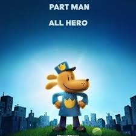

What Movies Have I Seen This Year?
The Monkey
When twin brothers find a mysterious wind-up monkey, a series of outrageous deaths tear their family apart. Twenty-five years later, the monkey begins a new killing spree, forcing the estranged siblings to confront the cursed toy. It's kills are creative and gory bringing some outrageousness to a movie with lots of awkward humor. Osgood Perkins reflects on death and grief in a film that is extremely entertaining while not overstaying it's welcone. A fantastic Stephen King adaptation.
Presence
A family becomes convinced they are not alone after moving into their new home in the suburbs. The camera movments are more than just a gimmick, deeply moving and a lovely ghost story.
Companion
A weekend getaway turns bloody and violent when a subservient android that's built for human companionship goes haywire. A surprising sci-fi thriller comedy that takes plenty of twists, with a surprisingly pongiant scipt. Fantastic performances all around the board, extremely funny but shockingly detailed dialouge, a great movie.
One Of Them Days
When her boyfriend takes her rent money, Alyssa and her roommate race against the clock to avoid eviction and keep their friendship intact. A revival of the 90s theatrical hangout comedy. A fantastic film to watch with friends, just a ton of fun led by 2 actresses with great chemisty.
Dog Man
When a police officer and his faithful police dog get injured in the line of duty, a harebrained but life-saving surgery fuses the two of them together -- and Dog Man is born. As Dog Man learns to embrace his new identity, he must stop feline supervillain Petey the Cat from cloning himself and going on a crime spree. Dog Man is a faithful adaptation of Dav Pilkey's work, proudly immature but surpisingly emotionally deep. Stunning animation to go with it.
Wolf Man
Blake and his family are attacked by an unseen animal and, in a desperate escape, barricade themselves inside a farmhouse as the creature prowls the perimeter. As the night stretches on, however, Blake begins to behave strangely, transforming into something unrecognizable that soon jeopardizes his wife and daughter. A simple but striking horror film.